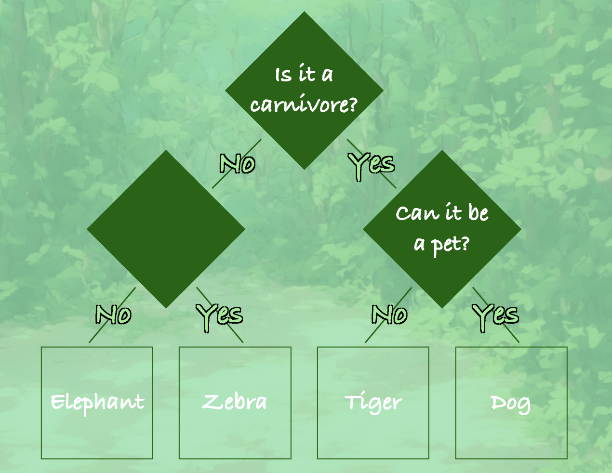

Decision Trees
FaunaForest
IEEE ISEC 2025
A web-based tool that introduces middle school students to decision trees. Students build and test trees through challenge-based activities and see how each split on a feature leads to a classification.